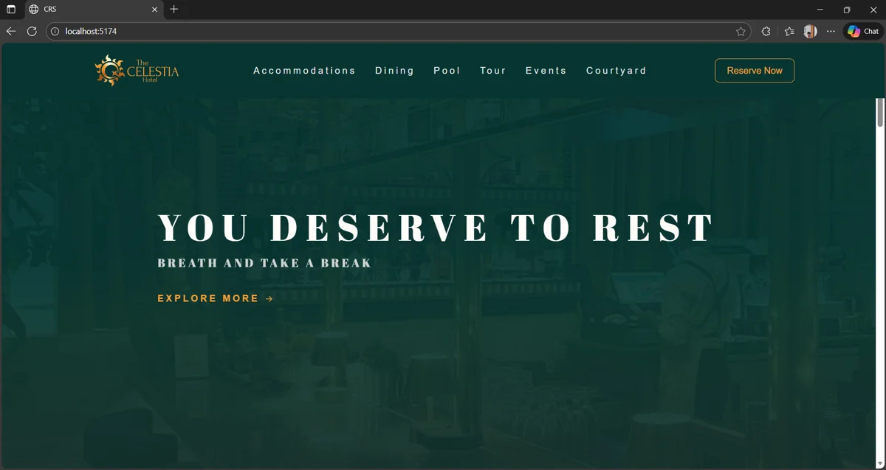
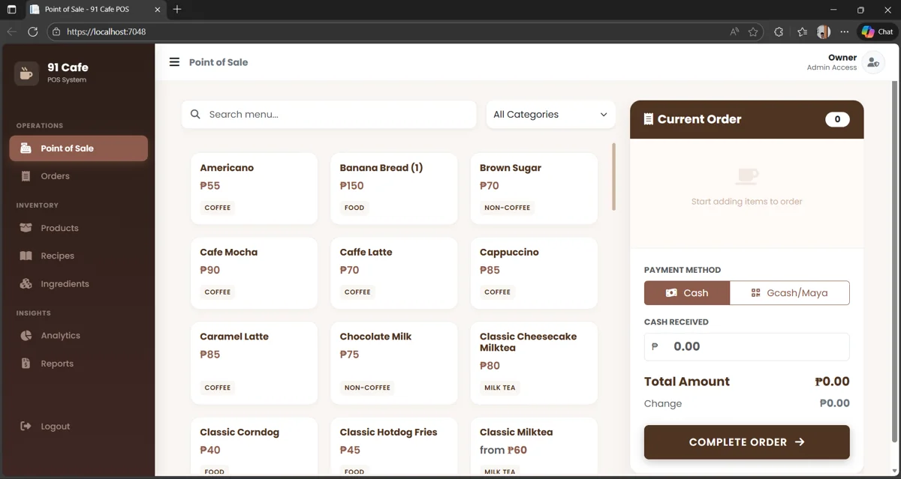
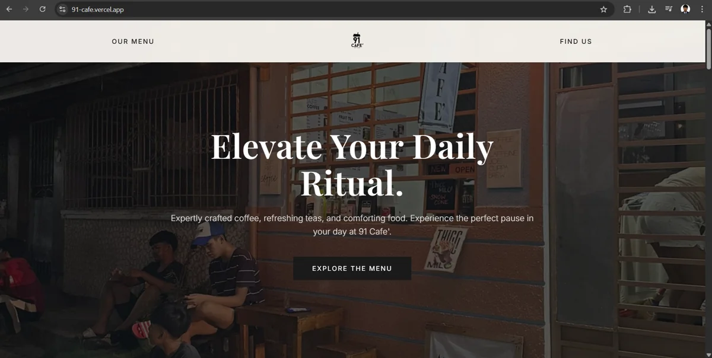
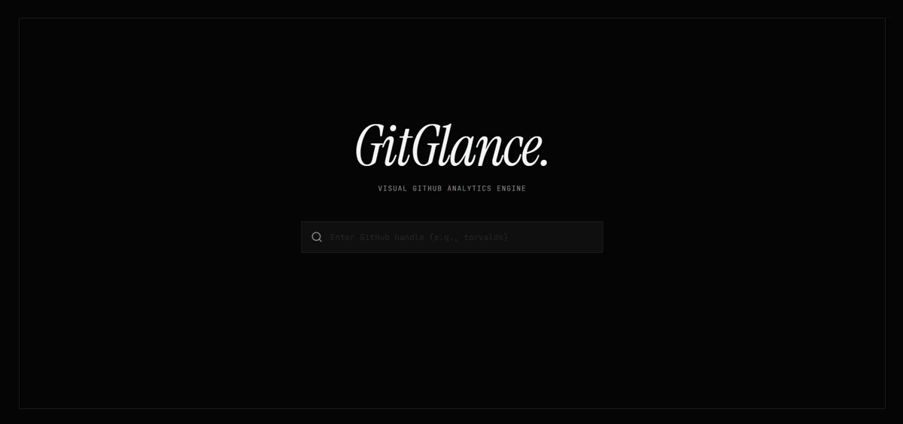
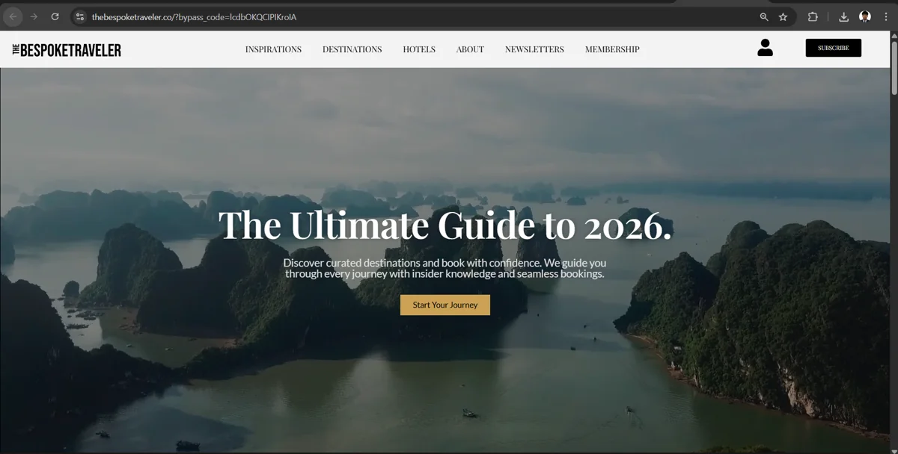

Mark Brian Viloria / Full-stack developer
Websites.
Web apps.
Built for your
business.
I build websites and web apps for small businesses — from a first
online presence to the tools that handle bookings, sales, and
everyday work.
Accepting project inquiries
· Based in the Philippines
From the first screen to the database.
Websites
/
Web applications
/
UI design
01 / Selected work
Different problems.
Practical solutions.
A closer look at what I build.
Five projects across business and developer tools.
● ● ●
Celestia
↗

01
Hospitality / Web application
Celestia
A clearer path from browsing to booking.
A hotel web application that brings customer booking
and user management into one platform.
Explore live site
↗
(opens in a new tab)
Inside the project
+
Context & problem
Celestia was developed as an academic group project at
Quezon City University. The goal was to create a unified
hotel platform where guests could explore accommodations
and manage their bookings.
Role & process
I served as the frontend developer, building the responsive
user interface and guest-facing booking experience. I also
collaborated with the team to connect the frontend with the
application’s booking and user-management functionality.
Solution & tools
A web platform featuring real-time customer booking
and user management.
React, TypeScript, Node.js.
Outcome
Our team completed the system and successfully presented
and defended it as a school project.
● ● ●
Coffee Shop POS
↗

02
Retail / Business software
Coffee Shop POS
Sales and stock, in the same view.
A point-of-sale system connecting daily sales,
inventory management, and forecasting analytics.
Preview only · live link to be added
Inside the project
+
Context & problem
I created this personal project to explore how a coffee
shop could manage sales, inventory, and forecasting
through one practical system.
Role & process
I independently designed and developed the entire
application, including the interface, backend logic,
database, point-of-sale workflow, inventory management,
and analytics features.
Solution & tools
A full-stack point-of-sale application with inventory
management and sales forecasting analytics.
ASP.NET MVC, SQL, Bootstrap.
Outcome
The completed project demonstrates my ability to
independently build a full-stack business application
from planning and interface design through database
implementation.
● ● ●
91 Cafe
↗

03
Food & beverage / Website
91 Cafe
A café presence beyond the counter.
A responsive promotional and e-commerce website
built around the café’s digital presence.
Explore live site
↗
(opens in a new tab)
Inside the project
+
Context & problem
I created 91 Cafe as a personal project to build a
modern online presence for a café, with a responsive
experience for presenting its brand, products, and
offerings.
Role & process
I independently planned the interface, designed the
user experience, developed the responsive frontend,
and deployed the finished website.
Solution & tools
A promotional and e-commerce website with a
custom café interface.
Frontend, UI/UX, Vercel.
Outcome
The completed and deployed website demonstrates my
ability to take a frontend project from its initial
concept through design, development, and launch.
● ● ●
GitGlance
↗

04
Developer tools / Data visualization
GitGlance
Repository activity, made readable.
A developer analytics tool that visualizes GitHub
repository statistics and user contributions.
Explore live site
↗
(opens in a new tab)
Inside the project
+
Context & problem
I created GitGlance as a personal project to make
GitHub repository statistics and contribution data
easier to explore and understand.
Role & process
I independently designed and developed the application,
built its React interface, integrated the GitHub REST API,
and created the data-visualization components.
Solution & tools
A React interface connected to the GitHub API for
repository statistics and contribution visualization.
React, REST API, Data visualization.
Outcome
The completed and deployed application demonstrates
my experience working independently with React,
external APIs, asynchronous data, and visual analytics.
● ● ●
Luxury Travel Website
↗

05
Travel / WordPress
Luxury Travel Website
Destinations take the spotlight.
A travel website using destination imagery and
a custom interface to support trip discovery.
Preview only · live link to be added
Inside the project
+
Context & problem
This website was created for a client who needed a
polished digital presence for presenting luxury travel
destinations and experiences.
Role & process
I worked as the full-stack and WordPress developer,
handling the frontend presentation, responsive
implementation, WordPress setup, backend configuration,
and overall website functionality.
Solution & tools
A WordPress website with custom UI and
destination imagery.
WordPress, Frontend, Custom UI.
Outcome
I delivered a client-ready WordPress website designed
to present luxury travel content through a refined,
visually led browsing experience.
02 / How I can help
Your next step,
built around you.
A new website, a better customer journey, or a tool your
team needs. Start with the problem; we’ll work out the scope.
Tell me what you need
↗
01
Business websites
For cafés, hospitality brands, and small businesses
that need a clear, credible online presence.
Responsive pages · Content structure ·
WordPress or custom frontend
02
Web apps & business tools
For teams that need to connect customer actions
with bookings, inventory, or internal workflows.
Full-stack development · APIs · Database-backed features
03
Interface design & frontend
For an existing product or a new idea that needs
a clearer, easier-to-use interface.
UI/UX · Responsive implementation · Design-to-code
03 / Working together
Clear steps.
No guesswork.
A proposed approach for your project.
We’ll agree on deliverables and timing together.
-
01 / Understand
Start with the need.
Talk through your audience, the problem, your current
setup, and what a useful result looks like.
-
02 / Define
Make the scope clear.
Agree on priorities, page or feature requirements,
and a practical plan before development.
-
03 / Build & review
See it take shape.
Review the interface and working features at agreed
checkpoints, with space for focused feedback.
-
04 / Deliver
Get ready to use it.
Check the core journeys and responsive layouts,
then agree on launch and handover needs.
04 / The person behind the work
Hi, I’m Mark.
A builder at heart.
I care about how a product looks — and how it works
behind the screen.
I’m an independent full-stack developer and Information
Technology student at Quezon City University, based in
the Philippines. My interests connect web interfaces,
backend systems, and IoT hardware.
I bring frontend and backend thinking to the same
conversation, so we can consider the customer experience
and the system supporting it together.
The toolkit
Interfaces
React, Vue, JavaScript, TypeScript,
HTML, CSS, Tailwind CSS
Systems
Node.js, ASP.NET Core, SQL,
REST APIs, PayMongo integration
Design & delivery
Figma, Git, Postman, Vercel, Netlify
The tools follow the requirements.
Let’s choose what fits your project.
05 / A few useful answers
Before we
get started.
What kind of project is a good fit?
+
Business websites, customer-facing web apps, and tools
for booking, sales, or internal workflows align with the
work shown here. Share your idea and we can discuss
whether it fits.
How much will it cost, and how long will it take?
+
That depends on the scope, integrations, content, and
timing. Include your budget range and target date in
your inquiry so we can discuss a realistic plan before
committing.
Can you work on an existing website?
+
Send the current link, the technology if you know it,
and the specific issues you want to solve. I’ll review
the fit and we can define the changes together.
What should I prepare for an inquiry?
+
A short description of your business, what you want to
improve, and any target date or budget. A finished brief
isn’t necessary; a clear starting point is enough.
What happens after I reach out?
+
We’ll discuss your needs, clarify any missing details,
and decide on next steps. Scope, timing, launch, and any
ongoing support should be agreed before work begins.